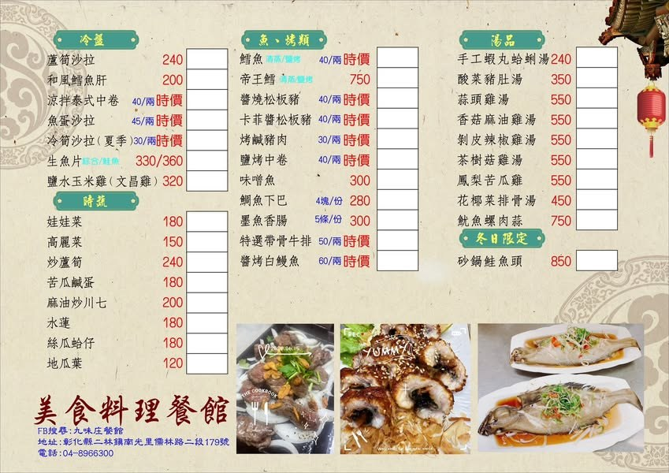

九味庄餐館
一桌熱菜，盛起二林的晚餐時光。

餐廳特色
以台式料理與團體合菜，承接第一天的晚餐安排。大家圍桌共食，也把白天的農遊故事接著聊下去。
特色菜色
店家公開菜單曾列白斬鹽水鵝、三杯白鰻魚、醬燒白鰻魚及蒜片帶骨牛小排，可作為團體詢菜的參考。
怎麼點更合適
依人數與預算洽詢桌菜，搭配魚、肉、蔬菜與主食。菜單會更新，實際供應及價格以店家確認為準。
照片為來源網站之實景紀錄；花況、供餐與活動以場域最新公告及預約確認為準。
 餓，林時起意！ERLIN SLOW TRAVEL
餓，林時起意！ERLIN SLOW TRAVEL一桌熱菜，盛起二林的晚餐時光。

以台式料理與團體合菜，承接第一天的晚餐安排。大家圍桌共食，也把白天的農遊故事接著聊下去。
店家公開菜單曾列白斬鹽水鵝、三杯白鰻魚、醬燒白鰻魚及蒜片帶骨牛小排，可作為團體詢菜的參考。
依人數與預算洽詢桌菜，搭配魚、肉、蔬菜與主食。菜單會更新，實際供應及價格以店家確認為準。